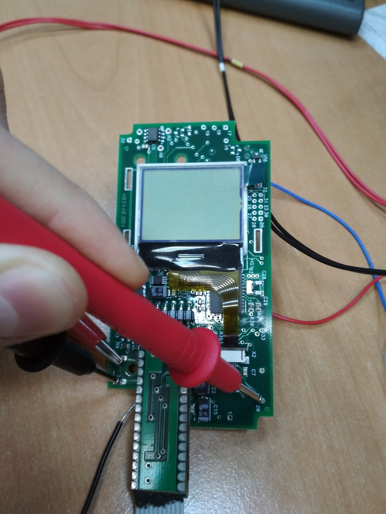
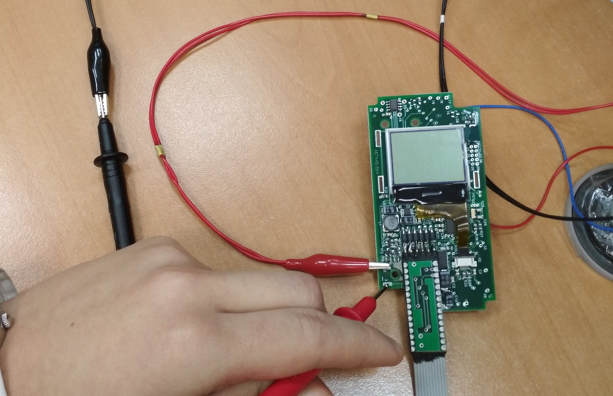

6130
- Получить платы, определить вариант исполнения, присвоить номер.
- Запрограммировать нужную версию. Сделать соответствующие отметки на плате для сборки.
- После программирования установить на плату технологические комплектующие: ЖКИ, клавиатуру, счетчик БЕТА-1.
- Установить (если не установлены) перемычки питания от батарейного отсека и перемычки формирования напряжения 400 В.
- Подать от источника питания напряжение 3,3 В.
- Замерить напряжение высокого - 400 В двумя вольтметрами: Универсальным (Rвх = 10 МОм) и статическим (Rвх = 1011Ом).

- Записать измеренное значение в журнал настройки.
- Проверить подсветку ЖКИ.
- Проверить работу всех кнопок клавиатуры.
- Проверить работу датчика Холла (магнитом).
- Изменить напряжение питания до 2,2 В и проконтролировать индикацию разряда батареи.
- Замерить потребляемый ток ≈ 4мА.
- Выключить прибор и измерить ток потребления в выключенном состоянии≈ 0,11 мА.

- Записать значение в журнал настройки.
- Занести номер в память прибора(кроме 6130С)
- После сборки в корпус проверить Bluetooth и звуковую сигнализацию.